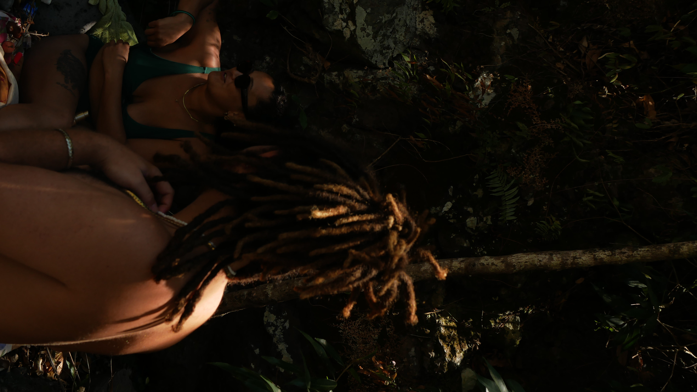
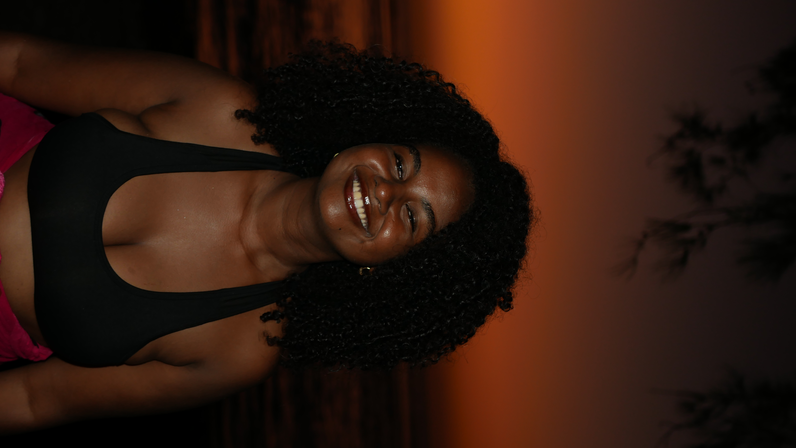

Les jours s'écoulent, ici à la Réunion. Des heureux hasards (le chômage et le froid à Paris) ont permis nos retrouvailles.
En compagnie d'un cast d'exception

Coco, l'aventurier
La rivière, diva

Valérie, ma star
Au bout du petit matin, sur cette plus fragile épaisseur de terre que dépasse de façon humiliante son grandiose avenir - les volcans éclateront, l’eau nue emportera les taches mûres du soleil et il ne restera plus qu’un bouïllonnement tiède picoré d'oiseaux marins - la plage des songes et l'insensé réveil. - Aimé Césaire
Pour suivre nos aventures : N'hésitez pas à vous abonnez !